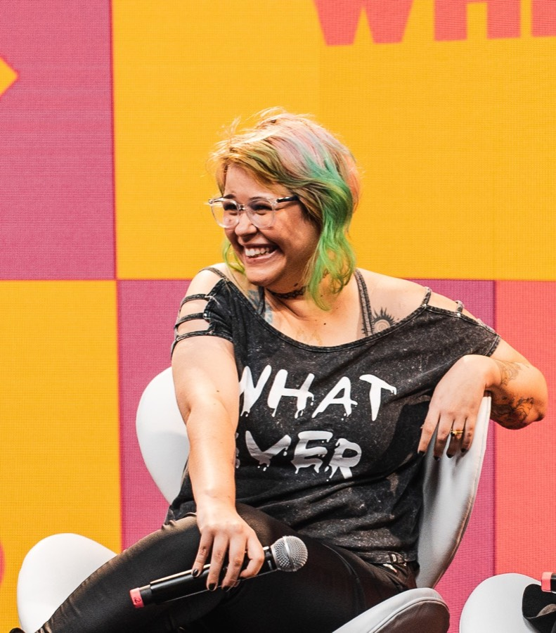

Para quem já entrega em tech: Saber código não basta quando o que te trava é invisível.
O recuo na planning, o peso de carregar o time, a sensação de que seu trabalho não aparece nos relatórios — a gente conhece. Mentoria sob medida, unindo vivência de mercado e psicanálise, para você parar de recuar e assumir o espaço estratégico que já é seu.
Por que só saber código não é o suficiente?
Métricas de performance, gráficos e commits são ótimos para avaliar máquinas, mas não resolvem as dinâmicas humanas. O que acontece no silêncio do Slack, o recuo invisível em uma planning ou o peso de carregar o piano técnico e emocional de um time inteiramente nas costas... nada disso aparece nos relatórios do Jira. Se o seu objetivo é ir além do operacional e assumir o espaço estratégico que você já merece, o caminho não é acumular mais uma certificação técnica. É aprender a decifrar as pessoas e o que acontece por trás das telas.
Equipes com liderança feminina são 34% mais lucrativas. O mercado precisa de você liderando — e não em silêncio.
Fonte: McKinsey & Company — Women in Tech
Homens se candidatam quando atendem 60% dos critérios; mulheres, só com 100%. O perfeccionismo está te travando — você não precisa dominar tudo pra dar o próximo passo.
Fonte: Hewlett-Packard (HP), citado na Harvard Business Review
Mulheres em tech pedem aumento e promoção com 4 vezes menos frequência que homens — esperando que o trabalho "fale por si só". Aprenda a negociar seu valor real.
Fonte: Dice — Tech Salary Report
O primeiro algoritmo processado por máquina foi escrito por uma mulher. A tech não é um clube masculino onde a gente tenta entrar — a gente ajudou a fundar essa área.
Fonte: The Royal Society — registros históricos
Isso soa familiar?
Coisas que a gente vê muito no dia a dia de quem trabalha em tech.
A resistência na Planning
Você desenha a arquitetura mentalmente, mas recua por um perfeccionismo paralisante. Minutos depois, um par apresenta a mesma ideia com menos profundidade e leva o crédito da solução técnica.
A fantasia da "Dev Perfeita"
Achar que precisa dominar o framework, o edge case e a documentação impecável antes de se candidatar a uma vaga de Staff, Tech Lead ou propor um alinhamento cross-functional.
A armadilha da invisibilidade
Esperar que o seu código "fale por si só" enquanto se desgasta em silêncio tentando provar seu valor técnico. Hard skill sem escuta analítica cria um teto invisível na sua carreira.
Traga a sua trajetória para a luz
O nosso cérebro adora silenciar as nossas vitórias e fixar o foco apenas no incêndio que precisamos apagar amanhã. O Painel de Conquistas é uma ferramenta prática para você documentar a sua jornada de impacto real, livre de falsas modéstias. Ele serve para você enxergar, com clareza estruturada, o tamanho do que você entrega. É um exercício para blindar sua segurança interna e te dar argumentos inquestionáveis quando for a hora de negociar seu espaço ou se posicionar.
Marca uma conquista do lado e vê como ela aparece no painel:
Seu Painel de Conquistas
Marca uma conquista do lado pra começar a montar seu Painel de Conquistas
Como podemos trabalhar juntas
Escolha o formato que faz mais sentido pra você agora.
Tech & Posicionamento — 1:1
-
Plano Sob Medida: Nada de cópia e cola. Adaptado 100% à sua stack, liderança e contexto corporativo atual.
-
Escuta Analítica e Emocional: Sessões focadas em desarmar mecanismos de defesa e autossabotagem, dando as cutucadas necessárias para destravar seu espaço.
-
Suporte Estratégico no WhatsApp: Direto comigo para clareza em situações críticas em tempo real (conflitos na equipe, boards difíceis ou alinhamento de promoção).
-
Grupo Tech & Posicionamento incluso como bônus — você leva o 1:1 e ainda participa das sessões coletivas.
Grupo Tech & Posicionamento
-
2 meses de mentoria em grupo, com sessões quinzenais ao vivo.
-
Turma pequena — máximo 10 mulheres — pra você ter atenção de verdade.
-
Ferramentas pra largar o perfeccionismo e montar seu Painel de Conquistas desde a primeira sessão.
Valores e formas de pagamento na conversa inicial.

Oi, eu sou a Pachi!
Eu passei anos gerenciando comunidades e liderando processos em grandes ambientes de tecnologia. Mas, ao longo dessa jornada, o que realmente me transformou foi perceber que o nó que trava as mulheres mais brilhantes do mercado raramente é a falta de conhecimento técnico. Quase sempre, o desafio é o peso invisível de se posicionar.
Por isso, decidi construir um espaço de insubordinação. Uni minha vivência prática de mercado ao olhar profundo da psicanálise para criar um acompanhamento que foge completamente de fórmulas prontas. Não estou aqui para te ensinar regras de mercado corporativo que você já está cansada de saber. Estou aqui para te escutar de verdade, entender seus desafios e possíveis bloqueios e te dar os empurrões necessários para você parar de recuar e ocupar o seu lugar na linha de frente do ecossistema de tecnologia. É um plano sob medida, desenhado para a sua realidade, porque mudar o mundo começa quando a gente ajuda a mudar a realidade de quem está do nosso lado.
O que as mentoradas dizem
Placeholders — substituir por depoimentos reais com autorização
"Passei três meses calada nas plannings achando que precisava de mais dados. Na mentoria entendi que era defesa, não falta de preparo. Hoje defendo arquitetura sem esperar o 'momento perfeito'."
"Não é coaching de LinkedIn. O plano foi sob medida pra minha stack e pro contexto do time. O WhatsApp salvou em situações que uma sessão quinzenal não resolveria."
"Montar o Painel de Conquistas mudou como eu negocio promoção. Parei de esperar que o código falasse por mim — passei a ter argumentos concretos e confiança na conversa."
Ficou com dúvida?
Manda mensagem → conversa sem compromisso → proposta do formato certo
Pronta pra dar o próximo passo?
Manda uma mensagem — a gente conversa sem compromisso, entende onde você está e vê qual formato faz mais sentido pra você.
Poucas vagas por turma